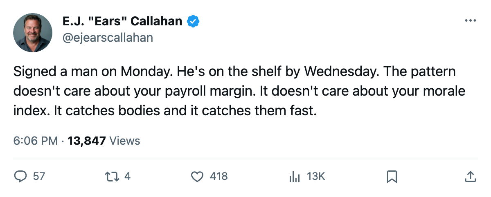
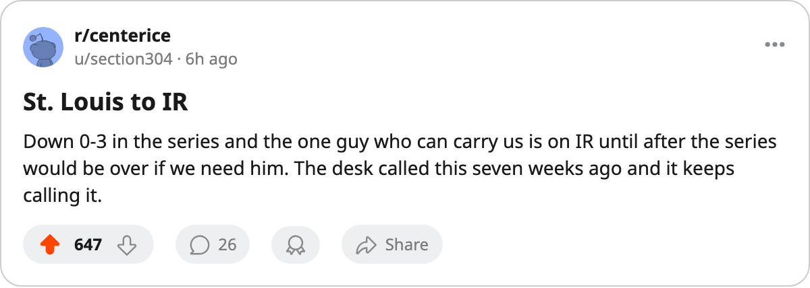

RUMOR METER: TB Signs Its Co-Leading Playoff Scorer. He's on IR in 3 Days. The Pattern Sits at 6 of 9. 🔥🔥
Tampa Bay filed Martin St. Louis on April 23. A head injury put him on the shelf before Game 4 in Washington.
 E.J. "Ears" CallahanInsider · The Hot Stove
E.J. "Ears" CallahanInsider · The Hot Stove

The signing-injury pattern reaches a live club
 Tampa Bay Lightning signed
Tampa Bay Lightning signed  Martin St. Louis88 on 2005-04-23 for $293,720. The league's injured list now carries him with a head injury, onset window between 2005-04-23 and 2005-04-26, return date 2005-05-04. He will not dress for Game 4 in Washington on 2005-04-29.
Martin St. Louis88 on 2005-04-23 for $293,720. The league's injured list now carries him with a head injury, onset window between 2005-04-23 and 2005-04-26, return date 2005-05-04. He will not dress for Game 4 in Washington on 2005-04-29.
The series sits at WSH 3-0. St. Louis carried 1 goal and 5 assists in 8 playoff games, tied with  Cory Stillman85 for the club lead. The return date falls one day after what would be Game 5 at home. The Tampa Bay Lightning bench needs four straight wins just to see that date.
Cory Stillman85 for the club lead. The return date falls one day after what would be Game 5 at home. The Tampa Bay Lightning bench needs four straight wins just to see that date.
This is the pattern this desk called on March 7, still feeding. Six of the nine signings filed since March 25 now carry a body part on the league's injured list. The latest one hit the cheapest club in the business, the one printing $43.72M in profit on a $48.50M payroll. Tampa Bay had $293,720 in spare change and spent it on a man the record now says has a head that won't let him play until May.
The pattern has no address
The desk first caught this in March with rebuilders catching bodies on rental signings. It migrated to contenders in April. Washington signed two in two days and both went to IR before a shift. Colorado signed two on the way out the door and both landed hurt. The eliminated clubs caught them fastest. Now it reaches a live club, the one with the league's second-best room at 96.7 morale and the second-highest profit margin in the league.
A league source close to the situation calls the timing "the worst possible." The source would not go further. The record does not need him to: the onset window brackets the signing date itself.
The Tampa Bay Lightning situation reads like the pattern's cleanest illustration. A minimum-salary deal, a co-leading scorer, a 0-3 deficit, a return date that only matters if Tampa Bay wins four in a row against  Washington Capitals, which just outscored them 11-6 across three games with
Washington Capitals, which just outscored them 11-6 across three games with  Jaromir Jagr84 collecting 2 goals and 9 assists in 6 outings.
Jaromir Jagr84 collecting 2 goals and 9 assists in 6 outings.
The pattern is not a conspiracy. It is a selection effect: the clubs signing rentals in April are the clubs with holes to fill, and a hole to fill means a body part that hasn't healed. A source who's been in several medical rooms this spring says the desk's sample is "not a coincidence, but not a hex either." The source asked not to be named.
What the desk gets wrong
The hit rate was 80 percent at 12 of 15. It has come down. Six of nine is not the same thing. The desk's own prediction log sits at 11 right, 17 wrong, 38 unsettled. That is 39 percent on settled calls. The signing-injury pattern is the one call this desk has made that keeps landing, and even that has started to slip.
The next signing is the next test. The pattern has not broken. It has just gotten harder to watch from the other side of the glass.

